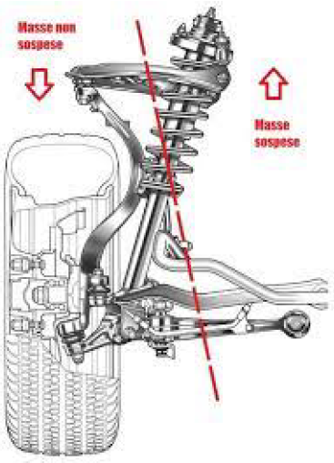
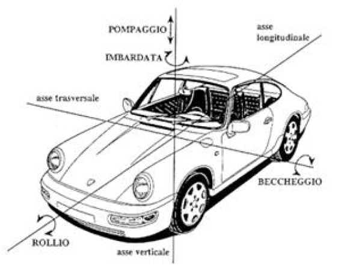
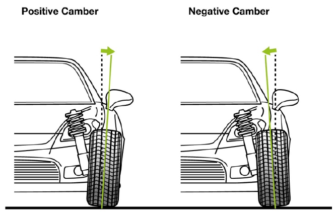
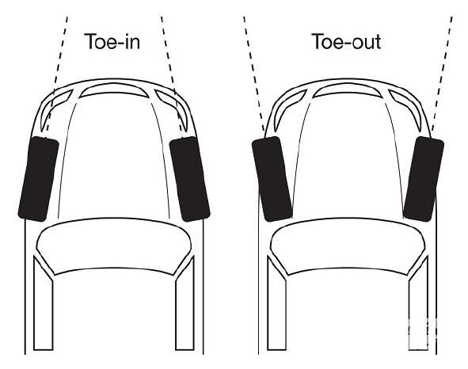
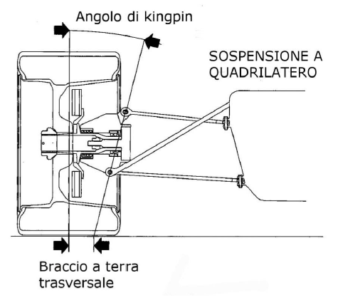
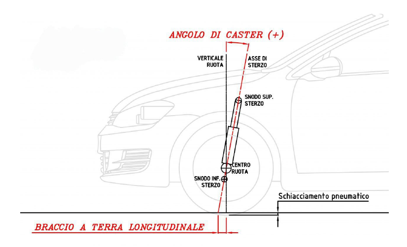
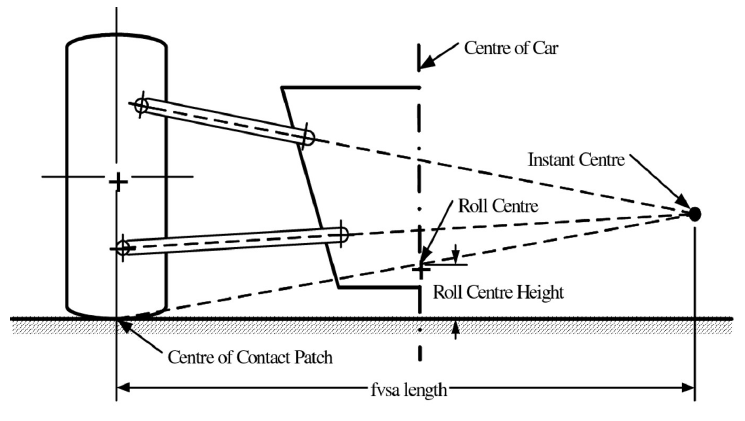
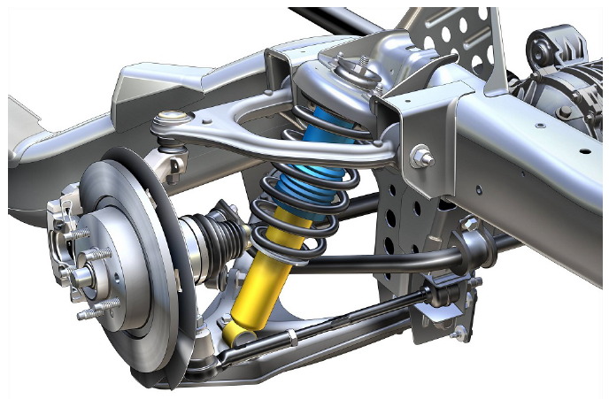
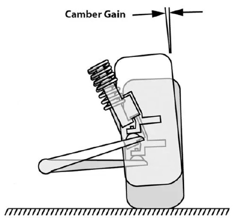
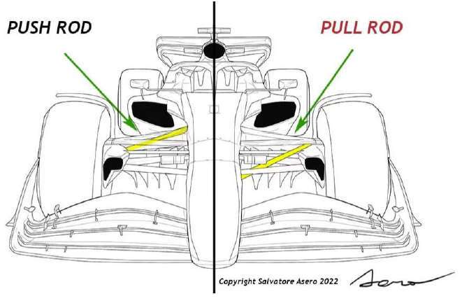

Fenice suspension
Abstract
In this paper, the importance of suspensions in a formula SAE vehicle will be analyzed.
Before delving into the research, some considerations must be made: the suspension of a vehicle is the kinematic system that separates the suspended masses from the unsuspended masses through a series of elements that control the contact between the tires and the ground. Suspended masses refer to all vehicle components that undergo height variations relative to the ground, such as the body or the frame. On the other hand, unsuspended masses are all those elements that should remain equidistant from the ground at all times, such as tires, wheels, and braking system.
The impact of masses on the performance of a car is always associated with their inertia. It is no coincidence that there is a relationship between suspended masses and unsuspended masses, which represents a fundamental index during vehicle design. This relationship can be calculated by dividing the weight of all the suspended masses by the sum of the weights of all the unsuspended masses. The result will obviously have different values depending on the vehicle in question, and the higher this result, the more comfortable the vehicle will be, especially on rough roads. The reason for this behavior lies in the transmission of motion from a lower mass body to a higher mass body. The conclusion is that keeping unsuspended masses low is convenient because the lighter the unsuspended mass, the more the suspensions and springs can keep the tires in contact with the ground and limit stress on the most critical points of a vehicle, such as the suspension attachments themselves.

The function of the suspension is therefore to maintain the best possible contact between the tire and the road surface by controlling the physical response under different load conditions. By maximizing traction and contact with the road, the tire's ability to maintain the grip necessary for the highest possible speed without any slipping of the vehicle will also increase, thus improving the performance of the vehicle.
It should also be remembered that inefficiencies are often a source of mechanical stress for the vehicle, so a heavy vehicle will require more resistant suspension and transmission components, and therefore more heavy. As a result, once in motion, the vehicle will have more energy, for example, causing greater overheating problems with the brakes, which must dissipate more energy to cause the vehicle to stop. In a logical line, it can be said that suspensions have a direct effect on the vehicle dynamics as they allow for greater mobility of the body, and an indirect effect on the geometry of the alignment with respect to the road, influencing the response of the tires and therefore the vehicle itself.
Characteristics vehicle movements

During driving, the vehicle can experience load shifts, which are the combination of forces acting on the vehicle. In particular, during acceleration, braking, and especially while maintaining the highest possible speed while turning, the vehicle undergoes non-uniform variations in height from the ground. This means that the efficiency of the vehicle decreases if these movements are not controlled. The figure above shows the possible movements during driving. In particular, we identify the following types of oscillations:
- Roll, which is the oscillation of the vehicle around its longitudinal axis. This is the situation that occurs when, driving through a curve, one side of the car tends to lower towards the ground, while the opposite side tends to lift. In practice, a transfer of weight to the outer wheels with respect to the curve occurs. When the vehicle steers, suspended masses tend to move in the opposite direction to that of the center of the curve, due to centrifugal force. Note, however, that this is an apparent force, i.e. not directly applied. Specifically, a curvilinear motion is actually caused by centripetal force, which in the case of a car in a curve depends directly on the force of friction between the tires and the asphalt. In the vehicle reference system, this results in a centrifugal force.
Factors that influence the intensity of roll include the acceleration in the curve caused by the aforementioned forces, the weight of the car, the width of the road, and the distance between the center of gravity and the roll center, i.e. the point around which the car moves laterally or transversely. The higher the distance, the greater the roll and the risk of tipping over. High-center-of-gravity vehicles, such as SUVs and off-road vehicles, are the most prone to tipping over.
-
Pitch, on the other hand, is the longitudinal oscillatory movement. In the automotive field, it occurs in two opposite situations: braking and acceleration. When the vehicle stops, especially if violently, the front lowers while the tail rises and the rear wheels lose grip. The opposite occurs during acceleration. This phenomenon is influenced by overhangs, i.e. body parts that extend longitudinally beyond the tires in relation to the total length of the vehicle: the greater this measurement, the greater the tendency to heave. Whether the car is front-wheel drive or rear-wheel drive is also a determining factor.
-
Finally, yaw is the oscillation around the vertical axis passing through the center of gravity. Among the elements that determine the magnitude of yaw, tire grip can be identified first and foremost. In fact, the forces that tend to move the body are present precisely because the tires create constraints at contact with the ground. Rubber compounds and width can make a difference in critical conditions, as can the condition of the road surface, which can affect grip. The wheelbase and track of the vehicle also affect yaw.
It can therefore be inferred that the suspension system, in addition to being complex, is at the same time fundamental as it is responsible for the comfort of a car, but also for almost all of the deficiencies in maneuverability and handling of the vehicle from which the more or less good performance of the vehicle derives.
Important parameters
The wheel, in addition to being free to rotate around its own axis and around the steering axis, must be able to move relative to the body in a direction more or less perpendicular to the ground. This movement must be guided by the suspension leverages, in order to always ensure the correct positioning of the tire relative to the ground, as the ability of a tire to transmit forces to the ground depends on the angles that the wheel's center plane assumes relative to the ground.
Therefore, the following are introduced:
- the camber angle, which is the measure in degrees of the difference between the vertical alignment of the wheels perpendicular to the surface. Excessive positive or negative camber increases the wear of the tread on the outside or inside of the tire. However, it is sought to maintain this value close to zero, the ideal position for obtaining uniform tire wear.
On the other hand, a negative camber is often found at the rear, with the purpose of improving the vehicle's stability. A negative angle is necessary because, when the car goes through a curve, the chassis inclines, thus increasing the camber degree itself. If the angle were not slightly negative, the tire would only touch the ground with the outside, reducing traction. Since the grip of a tire increases as its contact area with the ground increases, the ideal situation would be achieved if the tire remained perpendicular to the ground without deforming in the presence of high lateral loads. However, this is not usually the case, and a compromise must be sought.
The simplest way is to adjust the camber so that the tire wears evenly across the tread width, so that every point of the tire is used to the fullest. A car with very soft suspensions requires a more accentuated negative camber angle than one with stiff suspensions.

- The toe angle is the angle each wheel has with the longitudinal axis of the vehicle. A positive toe corresponds to having the front of the wheel closer to the central axis of the car compared to the rear. Otherwise, it is referred to as a negative toe. A positive toe generally increases the straight-line stability of the axle on which it is applied, while a negative toe makes it more reactive and maneuverable in changes of direction and turns. For this reason, it is common to build a vehicle with positive toe on the front wheels, in order to improve braking stability when the wheels tend to diverge, and always positive toe on the rear wheels in order to stabilize the car in the entrance to a curve and make it less nervous on exit.
In this case too, however, the right balance must be found, as although an increase in convergence improves drivability, it is also true that a decrease leads to greater stability and lateral grip. In both cases, if you overdo it in one direction or the other, tire heating and consumption is accelerated, forward resistance increases and can lead to oversteer or understeer phenomena.

- The kingpin angle is the tilt angle of the steering axis in the transverse plane of the vehicle, where the steering axis is virtually obtained by connecting the two nodes, upper and lower, to which the hub is anchored, nodes that allow the wheel to rotate on the steering axis. The first effect of the kingpin angle is the result of the rotation of the wheels around the tilted steering axis, which generates a lift of the car, albeit imperceptible to the driver. Consequently, the larger the kingpin angle, the greater the self-aligning moment of the steering, due to the force of gravity that tends to return the wheels to the position with the lowest gravitational potential.
The second effect is related to the length of the steering spindle, which together with the kingpin angle determines the transverse ground arm. The presence of a high transverse ground arm causes an increase in the effort required to steer and significant torque returns on the steering following braking, acceleration, or road irregularities. It is therefore ideal for the transverse ground arm not to be excessive, to ensure good steering feel and greater driving ease on rough surfaces to reduce the torque returned by the wheels.
It is not good practice to have a null ground arm, in fact in this case the tire when steering would tend to rotate around its vertical axis, generating a total skid of the contact area, which would result in a high effort on the steering wheel when the vehicle is stopped. Finally, it must be considered that the presence of the kingpin angle determines the correlation between the steering angle and the camber, causing the outside tilt of the upper part of the wheel, as the steering angle varies, which as previously discussed is not a geometry that is often sought after.

- The caster angle is the angle of inclination of the steering axis relative to the perpendicular to the ground when observing the vehicle sideways. The steering axis passes through the center of the wheel and is obtained by virtually joining the two nodes around which the wheel rotates, the upper and lower node. The caster angle is therefore present only on the steering wheels. Caster is positive when the upper pivot is rearward relative to the lower pivot in the direction of travel; it is negative when the upper pivot is forward of the lower pivot. All modern vehicles have positive caster.
The caster angle in turn determines another important parameter, the longitudinal ground arm. Again, observing the vehicle sideways, the longitudinal ground arm is the distance between the center of the wheel and the point of intersection between the ground and the steering axis. It combined with the tangential force that acts on the tire contact area with the asphalt, giving a moment that opposes the rotation of the wheel around the steering axis. It is logical to infer that, at the same caster angle, the longitudinal ground arm varies depending on the rolling radius (i.e., the distance between the center of the wheel and the ground), which in turn is influenced, besides the tire and wheel measurement, by tire inflation pressure and tread wear.
This self-aligning moment is felt every time the steering wheel is turned, noticing some opposition of the steering wheel, which tends to return to center, i.e., to the zero angle. If the angle is small, the realignment will be slow and gentle, vice versa with higher angles there is a more marked return of the steering and greater stiffness of the steering. The amount of self-aligning moment also depends on the speed and weight of the car: a heavier car, at the same angle and ground arm, will have a greater return on the steering. With the introduction of electric power steering, instead of previous electro-hydraulic power steering, it is now possible to vary the force returned on the steering wheel artificially, for example by setting more intensity levels depending on the selected driving mode.
In a curve, the caster assumes even more importance because the change in the amount of the caster angle of the steering wheels occurs. The greater the caster angle, the greater the effect of the change in camber in the curve, which is called dynamic camber. This benefits a better distribution of the vertical force acting on the outside tire in a curve and therefore greater road holding. The effect is called camber recovery, i.e., the ability of the suspension to increase camber in a curve, avoiding the tire contact area from moving towards the outer part of the tread, reducing its ability to resist lateral forces.

Finally, it is also necessary to briefly discuss the fundamental concepts regarding suspension kinematics. In particular, two views of the suspension scheme are considered: the frontal view of the geometry and the lateral view, known respectively as Front View Swing Arm Geometry (FVSA) and Side View Swing Arm Geometry (SVSA). The frontal view is obtained by sectioning the suspension scheme with a plane orthogonal to the ground, passing through the wheel center and perpendicular to the vehicle's central axis. The lateral view is obtained by cutting the suspension with a plane normal to the ground, also passing through the wheel center, but parallel to the vehicle's central axis. The frontal view is obtained by cutting the suspension with a plane normal to the ground, also passing through the wheel center, but parallel to the vehicle's central axis. At this point, the remarkable points that define the suspension geometry are projected onto the thus obtained planes.
On these two planes, the instantaneous center of rotation is defined, that is, the point around which the upright (or wheel hub) rotates instantly in the plane in question. In the presence of small relative movements between the wheel and the body, the position of the instantaneous center of rotation remains approximately constant. On the other hand, when the wheel undergoes significant movements, the position of the instantaneous center of rotation varies.
By considering the figure below, the instantaneous center of rotation can be found by simply finding the point of junction between the extensions of the suspension arms that connect the upright to the vehicle body.

The positioning of the instantaneous center of rotation identified in the frontal view (FVSA) controls and influences the position of the roll center and its height, Roll center height (RCH). It is defined as the point around which, in the section plane considered, during rolling, the suspended mass rotates instantaneously. Given the positioning of the instantaneous center of rotation in the plane considered, the position of the roll center is uniquely determined by tracing, for each of the two independent suspensions of the same axle, a line connecting the central point of the tire footprint (ignoring tire deformability) with the corresponding instantaneous center of rotation. The roll center is indeed identified by the intersection of the two lines traced.
Double wishbone

This type of configuration is the most common in automotive competions, and it is composed by two arms, occasionally parallel in an A-shape, but can also be found in an L-shape. Each arm has two points of anchorage on the frame through rubber bushings, typically coated in metal with a passing bolt to the frame, which absorb some of the vibrations that would otherwise transfer to the frame. A spherical joint or simply a pin connects the ends of the two triangles to the steering knuckle, a mechanical part that supports the mechanical bearing of the wheel and therefore indirectly the hub or spindle.
The shock absorber and coil spring are mounted on the transverse arms to control vertical movement. The low quadrilateral configuration, where the upper and lower arm are equidistant from the center of the wheel, is the one described so far. Generally on vehicles, the high quadrilateral configuration is more widespread, with the upper arm positioned above the tire through a fork that lengthens the cast pin in order to reduce bulk along the half-shaft. In this configuration, variations in characteristic angles when the suspension is compressed are also reduced. In this sense, it is expected that the upper part of the arm is generally shorter to induce good camber recovery. This arrangement is called SLA suspension or short long arms. When the vehicle is in a curve, the body roll causes a gain in positive camber on the slightly loaded inner wheel, while the heavily loaded outer wheel gains negative camber. This arrangement helps to maintain a square contact surface on the ground, increasing the vehicle's final turning capacity. It also reduces wear on the outer edge of the tire.
Camber recovery
The movement just described therefore allows what is called camber recovery, that is, the variation of the camber angle, guaranteed by the suspension kinematics, in correspondence with a unitary vertical displacement of the wheel during bumping, during which the latter approaches the body of the vehicle. While the height of the roll center depends on the front view static analysis (FVSA) of the instantaneous center of rotation, the camber recovery is influenced solely by the FVSA length, defined as the length of the segment obtained by projecting onto the road plane the distance between the instantaneous center of rotation, identified in the front view, and the center point of the contact footprint. Considering a front view static analysis (FVSA) transverse quadrilateral suspension and substituting both arms with a single element that connects the pillar to the instantaneous center of rotation, it is possible to define the camber recovery as
CG = \(\frac{\partial \gamma}{\partial z} = \tan^{-1}\left(\frac{1}{fvsa \text{ length}}\right)\)
where γ is the camber angle and z is the vertical displacement, while the parameter fvsa length is shown in the previous figure.

It is clear that as the fvsa length increases, camber recovery decreases. In particular, a camber recovery of zero is obtained by letting the fvsa length tend to infinity: this situation coincides with a transverse quadrilateral suspension scheme in which, in the front view, the arms are parallel and horizontal, so that their extensions tend to intersect at infinity.
Push-rod and Pull-rod configuration

The push-rod and pull-rod suspension systems were originally designed based on a stacked triangle scheme, consisting of two overlapping triangles that support the wheel hub at their outer end. However, the spring-damper assembly is moved inside the body, rather than being hinged at the bottom of the lower triangle. This allows for the reduction of unsprung mass and makes the suspension more aerodynamic, while also giving the designer more freedom to manage the flow around the chassis. These suspension systems are widely used in racing competitions such as Formula 1, IndyCar, and in sports cars such as the Lamborghini Aventador.
When the connection between the spring-damper assembly and the wheel hub is made through a rod, it is called a pull-rod, and when it is made through a strut, it is called a push-rod. The main difference between the two lies in the component that connects the hub and the spring/damper. In one case, it works in compression (push-rod), and in the other, it works in tension (pull-rod). This leads to different positioning and inclination of the components, with different consequences for front and rear suspensions. The movements are transmitted to the elastic component through a lever or rocker.
Of course, the distribution of the elements described in paragraph 2 also varies based on the design philosophy adopted for each suspension component.
Relation among center of gravity - roll center - ground
In recent years, the most commonly used front suspension configuration in F1 single-seaters has been push-rod. This choice is mainly due to the fact that push-rod suspensions allow the installation of other components in the upper part of the car, while in pull-rod suspensions, their placement will be in the lower part. This leads to greater ease of suspension adjustment for the push-rod configuration compared to pull-rod. Furthermore, freeing up space in the lower part of the car, there is more room for development to manage airflow using deflectors or other aerodynamic appendages. Conversely, the rear suspension often tends to be a pull-rod configuration. The reasons for this choice are mainly aerodynamic, as the pull-rod configuration allows for more freedom in component placement due to the pull-rod configuration. Another advantage is certainly a lower center of gravity. Having a lower center of gravity, which is normally associated with better handling and superior dynamic performance, helps improve grip, which is already guaranteed by the tires. In addition, the diameter of the pull-rod can often be reduced, since a strut supports traction better than compression, this technology is not subject to buckling, i.e. instability under peak load. Thus, there is a slight weight advantage and a reduction in the frontal area, reducing aerodynamic resistance. Of course, the needs of each vehicle must be evaluated and, especially in competitions, the regulations that impose certain distances between different points of the vehicle must be taken into account. For a practical example, with the regulatory gearbox and the return of the ground effect, the need to make space for the diffuser at the rear has led to the return of the push-rod configuration at the rear. Regarding kinematics, these two configurations have an important difference: the height of the roll center is lower for the push-rod suspension scheme. The choice of the height of this point is the result of a compromise:
- moving the roll center upward and closer to the center of gravity makes the car more responsive, as the forces tend to discharge through the arms without working the suspension and therefore without passing through torsion bars or springs in general. On the other hand, a choice of this type causes a greater lifting effect of the vehicle in a curve (jacking) and larger changes in track width that tend to stress the tires more.
- Moving the roll center downwards instead increases the vertical distance of this point from the center of gravity, i.e. where the centrifugal or centripetal force can be considered applied, depending on which reference system we adopt, and therefore there will be a greater roll moment. This means that in a curve, there will be greater forces acting on the suspension's elastic elements, and therefore to achieve the same responsiveness, more rigid elastic elements will be necessary. In this case, however, the road width variations are minor and the vehicle is able to be gentler on the tires.
The concepts expressed on the road width variation are clearer by defining the lateral displacement, evaluated in relation to the road plane, undergone by the contact footprint central point in correspondence with a vertical shake of the tire. This magnitude contributes to defining the semi-road width variation as a function of the vertical shake of the tire:
\(\frac{\partial \frac{t}{2}}{\partial z} = \frac{RCH}{\frac{t}{2}}\)
where \(\frac{t}{2}\) is the semi-road width and RCH is the height of the roll center, taken with its sign. The semi-road width variation as a function of the vertical shake of the tire depends on the position and height of the instantaneous center of rotation, since the latter parameter is fundamental to calculate the height of the roll center: increasing the height of the instantaneous center of rotation, increases the height of the roll center and the semi-road width variation. Furthermore, if the instantaneous center of rotation is positioned towards the interior of the vehicle and above the road plane, in correspondence with a vertical shake of the tire upwards, a positive semi-road width variation is obtained. On the other hand, if the instantaneous center of rotation is positioned towards the interior of the vehicle, but below the road plane, in correspondence with a vertical shake of the tire upwards, a reduction in the value expressing the semi-road width is obtained.
In general, therefore, the greater the distance between the center of gravity and the roll center, the greater the amplitude and duration of roll. So if we approach a curve with a vehicle in which we have increased the distance between the roll center and the center of gravity, given all other conditions such as suspension rigidity, anti-roll bar setup and others factors that the vehicle's body has a slower rolling motion, as the moment of inertia of the oscillating mass is greater relative to the roll center. In addition to having a slower settling, the roll is also wider, as the arm available to lateral forces is greater.
For now, we have focused on the distance between the roll center and the center of mass, but it is important to define how the distance between the roll center and the ground affects the vehicle behaviour. In a curve, if the roll center is above the road surface, the lateral force developed at the tire-ground contact generates a moment with respect to the corresponding instantaneous rotation center, which tends to push the tire downward and lift the suspended mass. On the other hand, if the roll center is below the road surface, in a curve, the lateral force exchanged between the tire and the ground generates a moment with respect to the instantaneous rotation center such that the suspended mass is pushed downward. In both cases, the suspended mass undergoes a vertical displacement due to the lateral forces generated at the tire-road contact and linked to the position of the roll center.